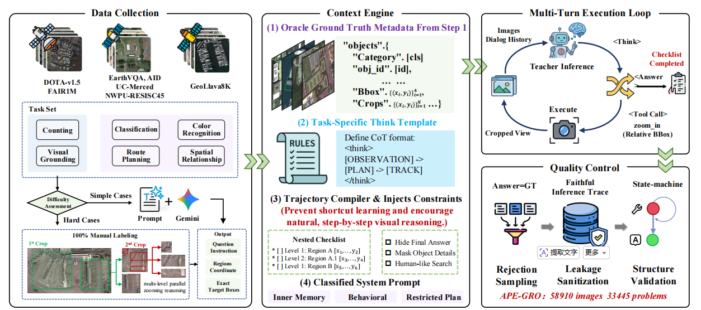
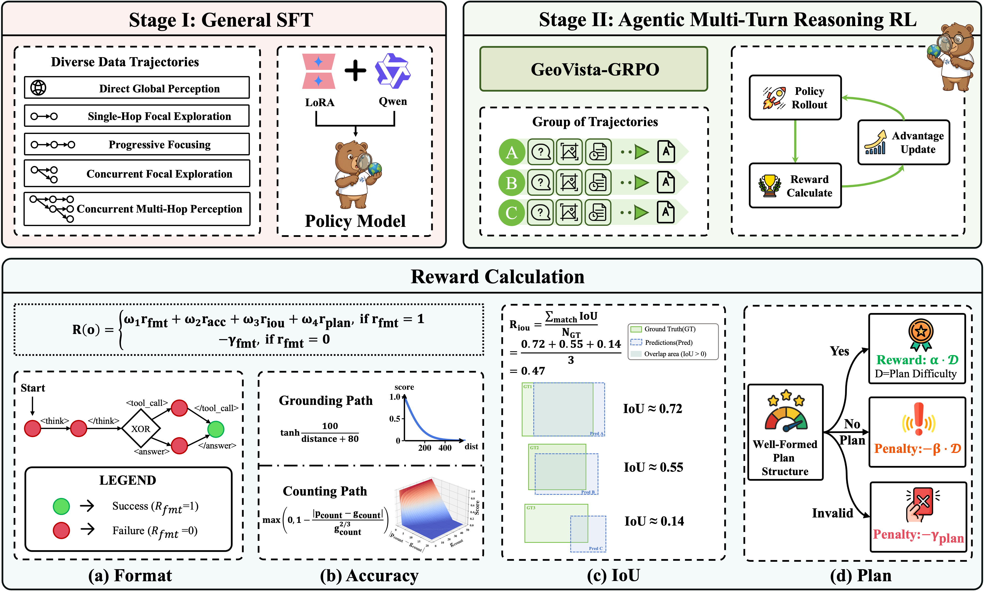
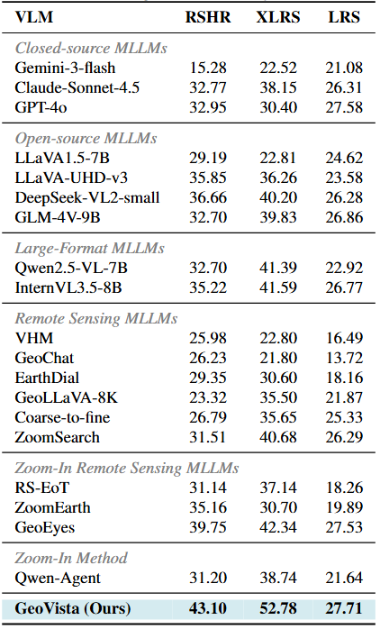
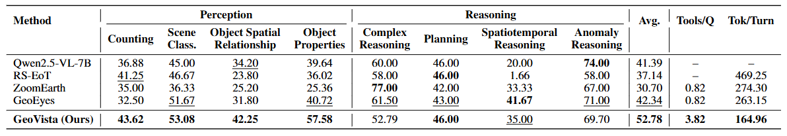
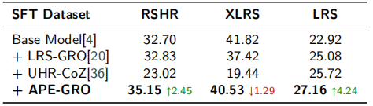
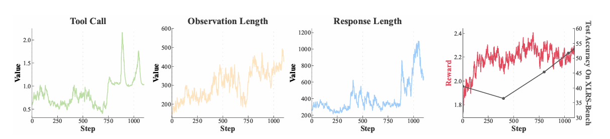
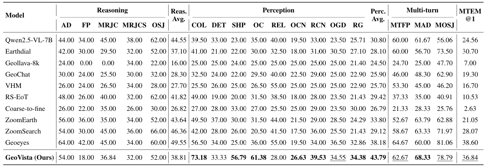
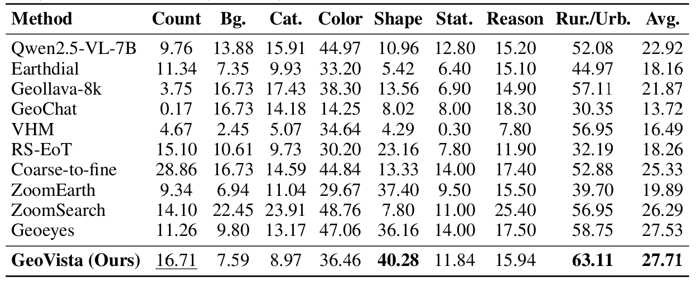

Interpreting ultra-high-resolution (UHR) remote sensing images requires models to search for sparse and tiny visual evidence across large-scale scenes. Existing remote sensing vision-language models can inspect local regions with zooming and cropping tools, but most exploration strategies follow either a one-shot focus or a single sequential trajectory. Such single-path exploration can lose global context, leave scattered regions unvisited, and revisit or count the same evidence multiple times.
To this end, we propose GeoVista, a planning-driven active perception framework for UHR remote sensing interpretation. Instead of committing to one zooming path, GeoVista first builds a global exploration plan, then verifies multiple candidate regions through branch-wise local inspection, while maintaining an explicit evidence state for cross-region aggregation and de-duplication.
To enable this behavior, we introduce APEX-GRO, a cold-start supervised trajectory corpus that reformulates diverse UHR tasks as Global-Region-Object interactive reasoning processes with a unified, scale-invariant spatial representation. We further design an Observe-Plan-Track mechanism for global observation, adaptive region inspection, and evidence tracking, and align the model with a GRPO-based strategy using step-wise rewards for planning, localization, and final answer correctness. Experiments on RSHR-Bench, XLRS-Bench, and LRS-VQA show that GeoVista achieves state-of-the-art performance.

To provide a cold start for this behavior, we construct APEX-GRO (Active Planning and Execution across Global-Region-Object levels), a supervised trajectory corpus for tool-interleaved UHR reasoning. Each trajectory in APEX-GRO is represented as a sequence of reasoning states, tool actions, visual observations, and evidence updates. APEX-GRO is synthesized through a four-stage pipeline: First, we collect diverse RS data sources, including DOTA-v1.5 and FAIR1M for visual grounding, AID , UC-Merced , NWPU-RESISC45, and WHU-RS19 for scene classification, GeoLLaVA-8K for high-resolution spatial reasoning, and EarthVQA for urban/rural categorization. Second, a context engine converts available annotations into a nested task checklist that specifies targets and sub-goals to be resolved. The checklist only guides task decomposition; exact oracle coordinates and final answers are hidden from the teacher model, reserved for automatic validation and human verification. Third, a teacher VLM (gemini-3.1-flash-lite-preview) generates tool-interleaved trajectories by alternating among reasoning, planning, crop-based inspection, and evidence tracking. Finally, we apply quality control to remove trajectories with coordinate leakage, invalid tool syntax, malformed spatial references, or inconsistent final answers, and drop evaluation benchmark overlaps.
APEX-GRO organizes UHR perception into a three-level hierarchy. At the Global level (L0), the model observes a downsampled global view and produces a macroscopic exploration plan. At the Region level (L1), it inspects candidate ROIs to verify structural patterns and narrow down task-relevant areas. At the Object level (L2), it performs fine-grained inspection for small targets, object attributes, and precise localization. Furthermore, because absolute pixel coordinates do not generalize well across image sizes, while unrestricted continuous coordinates are difficult to serialize reliably in language-model outputs, we therefore adopt a discrete relative coordinate system. This representation provides a nominal relative resolution of 0.1% within each ROI and decouples spatial outputs from the absolute image resolution.
GeoVista follows the same action space and spatial syntax as APEX-GRO during inference. Given an UHR image and a query, it avoids greedily committing to a single zooming path. Instead, it first constructs a global plan over multiple ROIs, and then verifies these ROIs with local observations while maintaining a structured evidence state. Because all branches correspond to different planned ROIs but share a global plan, we refer to this process as multi-branch exploration. The framework operates through four key steps:
1. Observe (Global Scene Observation): GeoVista first obtains a downsampled global view V0global of the UHR image. This view provides broad spatial coverage and supports reasoning about scene layout, potential target distribution, and task-relevant search regions. It does not resolve all fine-grained details but provides the necessary context for exploration planning.
2. Plan (Multi-ROI Exploration Planning): Conditioned on Q and V0global, the policy generates a structured plan. Each item in the plan records an ROI, a verification goal, and its current status. The plan specifies exactly which regions should be inspected and what evidence should be verified, enabling targeted exploration instead of unstructured zooming.
3. Track (Branch-wise Verification and Evidence Update): For each pending ROI, GeoVista extracts a high-resolution crop from the original image and decodes a branch trajectory. The evidence state E is updated after each branch, recording the inspected ROI, global coordinates, verification status, local observations, detected objects, and unresolved sub-goals. Local crop coordinates are mapped back to the global image frame before updating, which helps reduce redundant exploration and duplicated counting. If a crop remains ambiguous, GeoVista can append a sub-plan and inspect at a finer scale.
4. Evidence Aggregation: After branch-wise verification, GeoVista aggregates the evidence state into a final prediction. This step maps local findings back to their corresponding nodes in the global plan, forming a hierarchical evidence tree with verified observations, rejected hypotheses, and unresolved cases. Ultimately, the final answer is generated from organized spatial evidence rather than an unstructured long reasoning history.

As illustrated in the figure above, GeoVista is trained in two stages.
Stage I: Supervised Fine-Tuning. The first stage performs SFT on APEX-GRO to initialize the model with tool syntax, scale-invariant spatial grounding, and cross-scale reasoning patterns. By optimizing the model to imitate interleaved reasoning trajectories, SFT teaches the model to produce parseable outputs encompassing reasoning text, plan items, tool calls, evidence updates, and final answers. This decomposes large-scale visual reasoning into global observation, regional inspection, and object-level verification.
Stage II: GRPO Alignment. The second stage applies GRPO-based alignment to improve long-horizon active perception on verifiable tasks. To comprehensively evaluate the trajectories, the multi-dimensional reward function combines the following score items:

We evaluate GeoVista on three UHR remote sensing benchmarks: XLRS-Bench, RSHR-Bench, and LRS-VQA. Compared against 19 diverse representative baselines, GeoVista achieves the best overall performance, scoring 43.10 on RSHR-Bench, 52.78 on XLRS-Bench, and 27.71 on LRS-VQA. It significantly outperforms the strongest sequential zoom-in baseline (GeoEyes), demonstrating that increasing visual input capacity alone is insufficient without adaptive multi-region evidence acquisition.

GeoVista consistently achieves the best results across all perception sub-categories, including Counting (43.62), Scene Classification (53.08), Object Spatial Relationship (42.25), and Object Properties (57.58). Furthermore, GeoVista exhibits a distinct inference pattern: it utilizes more tool calls per question (3.82 Tools/Q) reflecting its broader multi-ROI exploration, while maintaining a lower token consumption per reasoning turn compared to existing long single-chain zoom-in methods.

To analyze the role of SFT trajectory data before RL alignment, we compared Qwen2.5-VL-7B fine-tuned on APEX-GRO against other trajectory datasets like LRS-GRO and UHR-CoZ. The results indicate that shallow interactions or strictly sequential trajectories may bias the model toward narrow visual search patterns. APEX-GRO provides a much more stable initialization, equipping the model with structured tool use, normalized spatial references, and multi-scale Global-Region-Object exploration patterns—creating a robust, RL-ready initialization.

While SFT teaches the model to imitate structured trajectories, GRPO alignment optimizes exploration decisions in unseen UHR scenes. Starting from the APEX-GRO SFT checkpoint, GRPO alignment significantly improves XLRS-Bench performance from 40.53 to 52.78. Training dynamics reveal that as training progresses, tool usage and observation length increase, indicating a shift from supervised imitation to active reward-based multi-region inspection and explicit evidence aggregation.

The overall tasks include visual perception, reasoning, and multi-turn dialogue tasks. GeoVista maintains consistent performance advantages across both perception and complex reasoning dimensions.

The sub-tasks breakdown includes object background, category, color, shape, status, reasoning, and rural or urban classification. Our method achieves state-of-the-art across a broad set of open-ended semantic evaluation metrics.
@misc{zhu2026geovistavisuallygroundedactive,
title={GeoVista: Visually Grounded Active Perception for Ultra-High-Resolution Remote Sensing Understanding},
author={Jiashun Zhu and Ronghao Fu and Jiasen Hu and Nachuan Xing and Xu Na and Xiao Yang and Zhiwen Lin and Weipeng Zhang and Lang Sun and Zhiheng Xue and Haoran Liu and Weijie Zhang and Bo Yang},
year={2026},
eprint={2605.14475},
archivePrefix={arXiv},
primaryClass={cs.CV},
url={https://arxiv.org/abs/2605.14475},
}